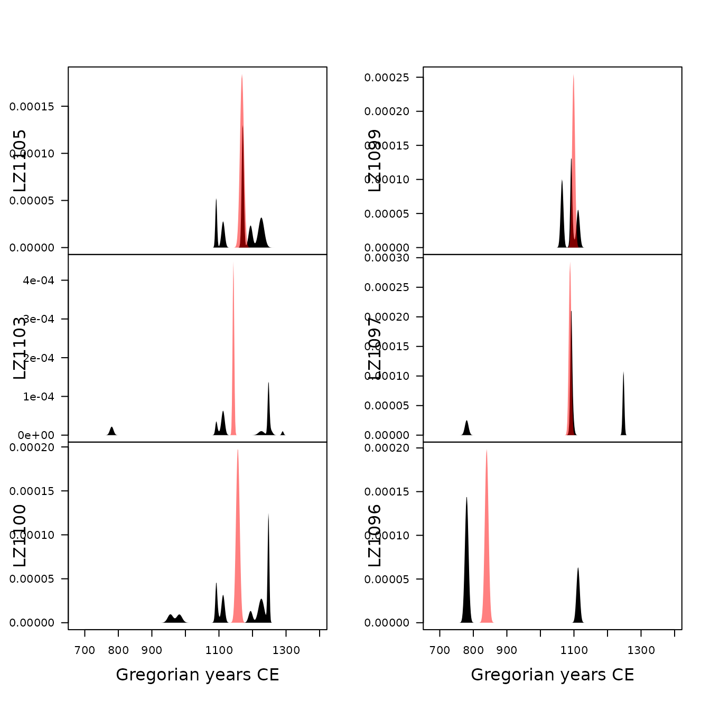
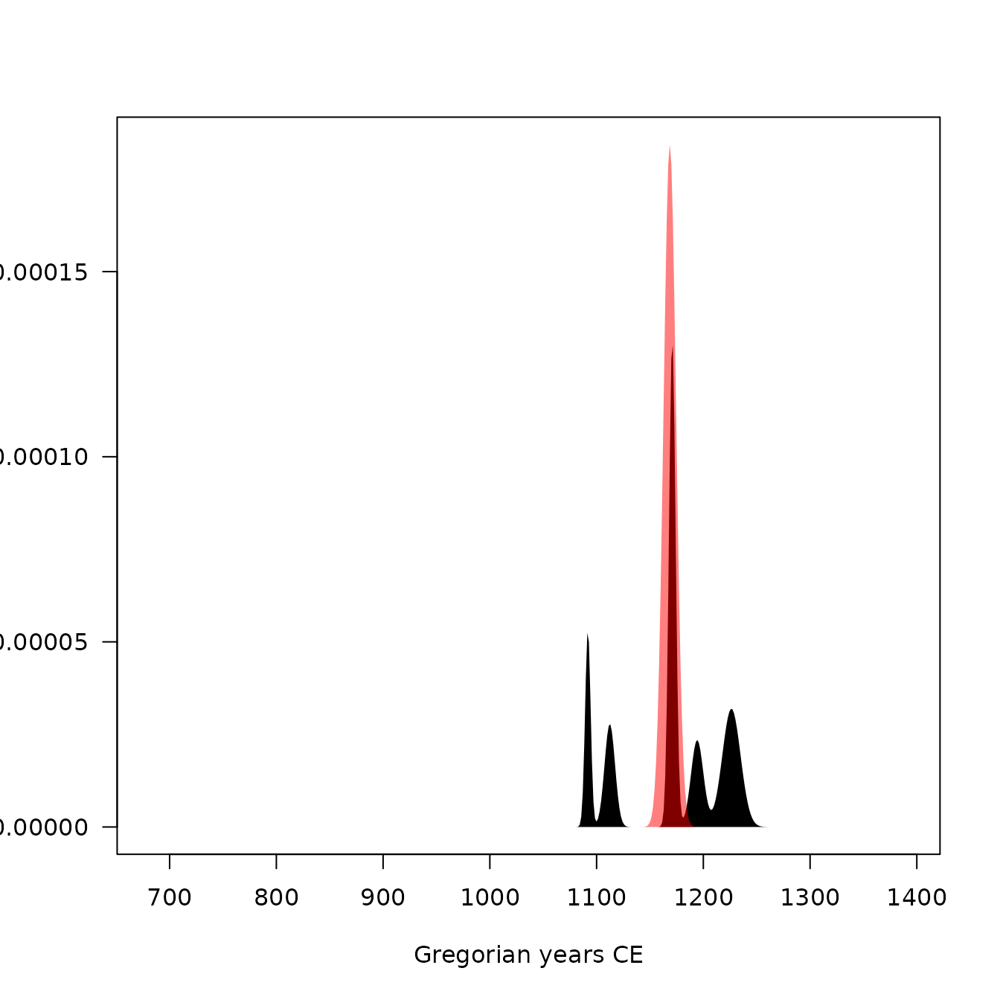

## Install extra packages (if needed):
# install.packages("folio") # datasets
# Load packages
library(kairos)Definition
Event and accumulation dates are density estimates of the occupation and duration of an archaeological site (L. Bellanger, Husi, and Tomassone 2006; L. Bellanger, Tomassone, and Husi 2008; Lise Bellanger and Husi 2012).
The event date is an estimation of the terminus post-quem of an archaeological assemblage. The accumulation date represents the “chronological profile” of the assemblage. According to Lise Bellanger and Husi (2012), accumulation date can be interpreted “at best […] as a formation process reflecting the duration or succession of events on the scale of archaeological time, and at worst, as imprecise dating due to contamination of the context by residual or intrusive material.” In other words, accumulation dates estimate occurrence of archaeological events and rhythms of the long term.
Event Date
Event dates are estimated by fitting a Gaussian multiple linear regression model on the factors resulting from a correspondence analysis - somewhat similar to the idea introduced by Poblome and Groenen (2003). This model results from the known dates of a selection of reliable contexts and allows to predict the event dates of the remaining assemblages.
First, a correspondence analysis (CA) is carried out to summarize the information in the count matrix \(X\). The correspondence analysis of \(X\) provides the coordinates of the \(m\) rows along the \(q\) factorial components, denoted \(f_{ik} ~\forall i \in \left[ 1,m \right], k \in \left[ 1,q \right]\).
Then, assuming that \(n\) assemblages are reliably dated by another source, a Gaussian multiple linear regression model is fitted on the factorial components for the \(n\) dated assemblages:
\[ t^E_i = \beta_{0} + \sum_{k = 1}^{q} \beta_{k} f_{ik} + \epsilon_i ~\forall i \in [1,n] \] where \(t^E_i\) is the known date point estimate of the \(i\)th assemblage, \(\beta_k\) are the regression coefficients and \(\epsilon_i\) are normally, identically and independently distributed random variables, \(\epsilon_i \sim \mathcal{N}(0,\sigma^2)\).
These \(n\) equations are stacked together and written in matrix notation as
\[ t^E = F \beta + \epsilon \]
where \(\epsilon \sim \mathcal{N}_{n}(0,\sigma^2 I_{n})\), \(\beta = \left[ \beta_0 \cdots \beta_q \right]' \in \mathbb{R}^{q+1}\) and
\[ F = \begin{bmatrix} 1 & f_{11} & \cdots & f_{1q} \\ 1 & f_{21} & \cdots & f_{2q} \\ \vdots & \vdots & \ddots & \vdots \\ 1 & f_{n1} & \cdots & f_{nq} \end{bmatrix} \]
Assuming that \(F'F\) is nonsingular, the ordinary least squares estimator of the unknown parameter vector \(\beta\) is:
\[ \widehat{\beta} = \left( F'F \right)^{-1} F' t^E \]
Finally, for a given vector of CA coordinates \(f_i\), the predicted event date of an assemblage \(t^E_i\) is:
\[ \widehat{t^E_i} = f_i \hat{\beta} \]
The endpoints of the \(100(1 − \alpha)\)% associated prediction confidence interval are given as:
\[ \widehat{t^E_i} \pm t_{\alpha/2,n-q-1} \sqrt{\widehat{V}} \]
where \(\widehat{V_i}\) is an estimator of the variance of the prediction error: \[ \widehat{V_i} = \widehat{\sigma}^2 \left( f_i^T \left( F'F \right)^{-1} f_i + 1 \right) \]
were \(\widehat{\sigma} = \frac{\sum_{i=1}^{n} \left( t_i - \widehat{t^E_i} \right)^2}{n - q - 1}\).
The probability density of an event date \(t^E_i\) can be described as a normal distribution:
\[ t^E_i \sim \mathcal{N}(\widehat{t^E_i},\widehat{V_i}) \]
Accumulation Date
As row (assemblages) and columns (types) CA coordinates are linked together through the so-called transition formulae, event dates for each type \(t^E_j\) can be predicted following the same procedure as above.
Then, the accumulation date \(t^A_i\) is defined as the weighted mean of the event date of the ceramic types found in a given assemblage. The weights are the conditional frequencies of the respective types in the assemblage (akin to the MCD).
The accumulation date is estimated as: \[ \widehat{t^A_i} = \sum_{j = 1}^{p} \widehat{t^E_j} \times \frac{x_{ij}}{x_{i \cdot}} \]
The probability density of an accumulation date \(t^A_i\) can be described as a Gaussian mixture:
\[ t^A_i \sim \frac{x_{ij}}{x_{i \cdot}} \mathcal{N}(\widehat{t^E_j},\widehat{V_j}^2) \]
Interestingly, the integral of the accumulation date offers an estimates of the cumulative occurrence of archaeological events, which is close enough to the definition of the tempo plot introduced by Dye (2016).
Limitation
Event and accumulation dates estimation relies on the same conditions and assumptions as the matrix seriation problem. Dunnell (1970) summarizes these conditions and assumptions as follows.
The homogeneity conditions state that all the groups included in a seriation must:
- Be of comparable duration.
- Belong to the same cultural tradition.
- Come from the same local area.
The mathematical assumptions state that the distribution of any historical or temporal class:
- Is continuous through time.
- Exhibits the form of a unimodal curve.
Theses assumptions create a distributional model and ordering is accomplished by arranging the matrix so that the class distributions approximate the required pattern. The resulting order is inferred to be chronological.
Predicted dates have to be interpreted with care: these dates are highly dependent on the range of the known dates and the fit of the regression.
Usage
This package provides an implementation of the chronological modeling method developed by Lise Bellanger and Husi (2012). This method is slightly modified here and allows the construction of different probability density curves of archaeological assemblage dates (event, activity and tempo).
## Bellanger et al. did not publish the data supporting their demonstration:
## no replication of their results is possible.
## Here is an example using the Zuni dataset from Peeples and Schachner 2012
data("zuni", package = "folio")
## Assume that some assemblages are reliably dated (this is NOT a real example)
## The names of the vector entries must match the names of the assemblages
zuni_dates <- c(
LZ0569 = 1097, LZ0279 = 1119, CS16 = 1328, LZ0066 = 1111,
LZ0852 = 1216, LZ1209 = 1251, CS144 = 1262, LZ0563 = 1206,
LZ0329 = 1076, LZ0005Q = 859, LZ0322 = 1109, LZ0067 = 863,
LZ0578 = 1180, LZ0227 = 1104, LZ0610 = 1074
)
## Model the event and accumulation date for each assemblage
model <- event(zuni, dates = zuni_dates, rank = 10)
## Model summary
## (results are expressed in rata die)
summary(model)
#>
#> Call:
#> stats::lm(formula = date ~ ., data = contexts)
#>
#> Residuals:
#> LZ0852 LZ0610 LZ0578 LZ0569 LZ0563 LZ0329 LZ0322 LZ0279
#> -479.32 351.48 1283.51 163.57 -1626.71 -290.90 950.04 -1427.33
#> LZ0227 LZ0067 LZ0066 LZ0005Q CS16 CS144 LZ1209
#> -280.59 -50.24 266.02 45.83 -105.47 1016.24 183.86
#> attr(,"class")
#> [1] "RataDie"
#> attr(,"class")attr(,"package")
#> [1] "aion"
#>
#> Coefficients:
#> Estimate Std. Error t value Pr(>|t|)
#> (Intercept) 425015.4 1064.9 399.095 2.36e-10 ***
#> F1 -57813.4 602.6 -95.938 7.08e-08 ***
#> F2 9387.7 615.2 15.260 0.000108 ***
#> F3 -2047.2 789.1 -2.594 0.060411 .
#> F4 3928.9 2127.1 1.847 0.138452
#> F5 -1146.2 1442.3 -0.795 0.471276
#> F6 995.1 485.4 2.050 0.109663
#> F7 1667.0 1906.7 0.874 0.431304
#> F8 4126.0 1264.9 3.262 0.031027 *
#> F9 -1889.1 1079.6 -1.750 0.155039
#> F10 -144.8 967.9 -0.150 0.888300
#> ---
#> Signif. codes: 0 '***' 0.001 '**' 0.01 '*' 0.05 '.' 0.1 ' ' 1
#>
#> Residual standard error: 1494 on 4 degrees of freedom
#> Multiple R-squared: 0.9997, Adjusted R-squared: 0.999
#> F-statistic: 1433 on 10 and 4 DF, p-value: 1.168e-06
## Extract model coefficients
## (convert results to Gregorian years)
coef(model, calendar = CE())
#> (Intercept) F1 F2 F3 F4 F5
#> 1163.6512430 -158.2887134 25.7005062 -5.6059619 10.7559523 -3.1402928
#> F6 F7 F8 F9 F10
#> 2.7236281 4.5617156 11.2951729 -5.1728421 -0.3984238
## Extract residual standard deviation
## (convert results to Gregorian years)
sigma(model, calendar = CE())
#> [1] 4.088072
## Extract model residuals
## (convert results to Gregorian years)
resid(model, calendar = CE())
#> [1] -1.3132066 0.9602214 3.5123344 0.4453877 -4.4554781 -0.7975492
#> [7] 2.6001038 -3.9104984 -0.7693659 -0.1399926 0.7260925 0.1228117
#> [13] -0.2908912 2.7814906 0.5009809
## Extract model fitted values
## (convert results to Gregorian years)
fitted(model, calendar = CE())
#> [1] 1217.3105 1073.0370 1176.4849 1096.5531 1210.4540 1076.7948 1106.3999
#> [8] 1122.9078 1104.7666 863.1376 1110.2712 858.8744 1328.2882 1259.2185
#> [15] 1250.4963
## Estimate event dates
## (results are expressed in rata die)
eve <- predict_event(model, margin = 1, level = 0.95)
head(eve)
#> date lower upper error
#> LZ1105 426454.0 420445.5 432462.4 2164.087
#> LZ1103 417145.8 414689.9 419601.7 884.558
#> LZ1100 421968.1 416394.9 427541.4 2007.317
#> LZ1099 400974.7 396642.1 405307.4 1560.503
#> LZ1097 397176.5 393404.6 400948.3 1358.530
#> LZ1096 306371.0 300801.2 311940.7 2006.057
## Activity plot
plot(model, type = "activity", event = TRUE, select = 1:6)
plot(model, type = "activity", event = TRUE, select = "LZ1105")
## Tempo plot
plot(model, type = "tempo", select = "LZ1105")Resampling methods can be used to check the stability of the
resulting model. If jackknife() is used, one type/fabric is
removed at a time and all statistics are recalculated. In this way, one
can assess whether certain type/fabric has a substantial influence on
the date estimate. If bootstrap() is used, a large number
of new bootstrap assemblages is created, with the same sample size, by
resampling the original assemblage with replacement. Then, examination
of the bootstrap statistics makes it possible to pinpoint assemblages
that require further investigation.
## Check model variability
## (results are expressed in rata die)
## Warning: this may take a few seconds
## Jackknife fabrics
jack <- jackknife(model)
head(jack)
#> date lower upper error bias
#> LZ1105 155634807 155628798 155640815 2164.087 2638541997
#> LZ1103 152396320 152393864 152398776 884.558 2583645955
#> LZ1100 154171872 154166299 154177445 2007.317 2613748366
#> LZ1099 146238877 146234544 146243210 1560.503 2479244339
#> LZ1097 145631868 145628096 145635640 1358.530 2468989755
#> LZ1096 112226452 112220882 112232021 2006.057 1902641373
## Bootstrap of assemblages
boot <- bootstrap(model, n = 30)
head(boot)
#> min mean max Q5 Q95
#> LZ1105 415907.5 427587.4 445914.2 418469.5 436944.4
#> LZ1103 398834.1 415522.4 435257.2 400255.2 428430.2
#> LZ1100 396985.8 423353.6 442831.3 404195.3 438630.3
#> LZ1099 397037.5 400756.5 404956.7 397767.7 403701.6
#> LZ1097 355754.5 395642.3 430101.1 357228.6 425757.7
#> LZ1096 264824.9 305586.9 373883.4 264824.9 341973.7